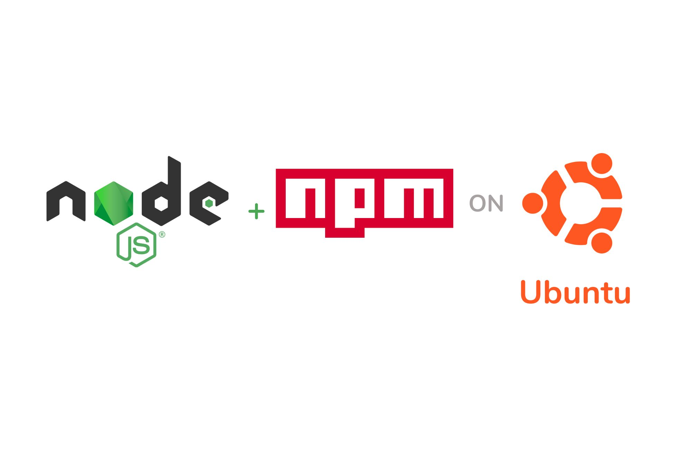
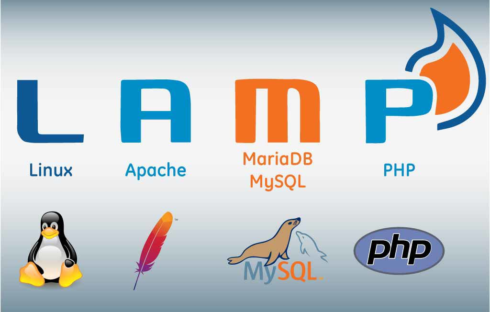
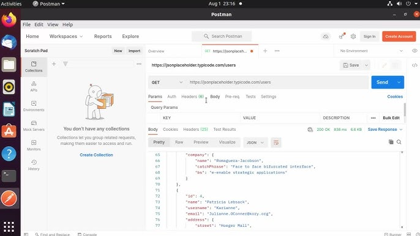

Node.js e npm
Plataforma essencial para desenvolvimento JavaScript, com o npm para gerenciar pacotes e dependências.
Apache, MySQL/MariaDB e PHP (LAMP)
Ideal para configurar um ambiente de desenvolvimento web local, com o Apache para servir conteúdo, MySQL/MariaDB para banco de dados e PHP para scripts do lado do servidor.
Postman
Ferramenta para testes de API, permitindo enviar requisições e testar endpoints de forma eficiente.
